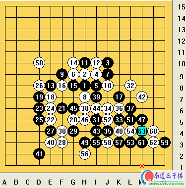
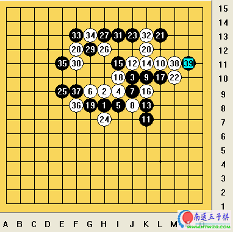
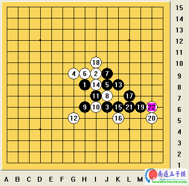
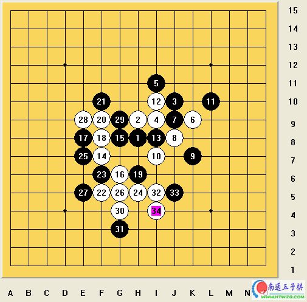
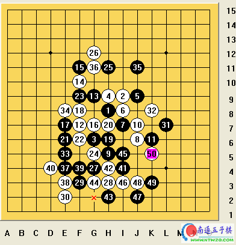

黄修一参加第六届连珠世界青少年锦标赛自评
#1 黄修一参加第六届连珠世界青少年锦标赛自评 作者：有志青年 发表时间：2006-8-7 11:24:01
赛前给自己定下的本届世界杯的最低目标是至少要赢一场,没想到第一场比赛我就完成了。昨天下午抽签结束,我第一轮的对手是中国棋手段然,段然是国内有名的快棋手,落子如飞,下棋时自信十足,给对手造成了很大的压力,比赛前我也做好了打硬仗的准备。
早上9点,第一轮比赛开始,我跟段然开的是疏星开局,黑5是走向平衡的一手,比赛初期大家都按定式处理。但是到了20手左右,对手开始渐渐占优,我心里不免有些紧张,毕竟自己的防守并不是很强.失去先手后,我开始踏踏实实地耐心防守,在经过几次交换之后,我渐渐把局势扳了回来,40手左右的时候已经是我在进攻了。
在我暗自庆幸的时候,严重的问题迎面袭来,我发现我的时间只剩下了1分多钟,而对手还剩下50多分钟。不愧是快棋手,下棋又快又稳。我利用最后的时间在下面又做了一手,只要对手再防一步,我这一局部的棋就全被废掉了。
这时用这么短时间再去和对手拼另外的局部,恐怕我会很吃亏，幸运的是,对手再粗粗计算了我角落的棋之后,在棋局的另一边下了一手,开始做棋进攻.而就在被他忽视的角落,我算出了连续8步的VCF取胜。
当我落下最后一子，我的时钟显示：55秒,而段然的时间还剩：55分钟。我惊险地在最后时刻战胜了这位来自云南的快棋手,兴奋异常。在这次有17个选手参加的世界青年锦标赛上,我自认实力最差,能赢一场,对我来说就是一份惊喜。当然，更多的是,我能通过这次比赛接触到当今国际棋坛的最新技术,并能通过比赛建立自己的自信心和实战经验,为以后的下棋积累基础。

中午的时候,第2轮的对阵表出来,我的对手是爱沙尼亚青年冠军约翰.伦茨,伦茨是赛前被认为是中国队本次夺冠的大热门,我们被安排在了第一台,这也是我参加比赛以来第一次能坐在第一台比赛。
中午休息时，我用电脑查看了一下伦茨03年到中国参加亚洲杯的棋谱,发现他是一个疏星非常强的棋手,我预计下午他也会开疏星,于是中午我特意研究他的几盘疏星局。
比赛之前我特意让队友帮我给我跟伦茨照了张合影,因为能跟国际高手过招的的机会对我来说是很难得的。
下午1:30,第2轮比赛开始,不出所料，对手果然开了疏星,我按照部署做了交换,虽然疏星是白棋中盘以后占优,但我不是一个防守很强的棋手,如果让对手执黑,我估计我的三板斧抵挡不了人家的狂攻猛打的。
交换之后,我的五手两打选了一个最强的和一个被称为和棋大定式的点，对手不熟悉我的实力,很小心的保留了和棋的点,这让我心里暗自高兴,如果能从伦茨手里拿到0.5分,不仅自己会非常满足,也会为中国队的主将吴昊分担了一些压力。
与上午第一轮不同的是,这盘棋开局我们下的很快,由于是定式,我们没过几分钟就下完了20余手,此时对手的一个白点让我有点紧张,因为这个点我接触的很少,在经过了一番长考之后,我在底下做了个跳眠三。之后，我们每手棋都需要计算很长时间,对手的每一步白棋都牵动着我的神经，心里不由感叹：不愧是本届杯赛的冠军候选人,每一步都杀机重重。
在一个角落被我交换之后,我突然发现了对手有一个很巧妙的抓禁手,而在棋盘的另一边，对手局面又即将形成大优,这个时候我计算了约有20分钟,终于想出了一个异常隐蔽的，一箭双雕的点,既解了远方的禁手，又进行了防守.正当我得意的时候,对手一个冲四,让我一下子晴转阴,原来我净计算怎么解禁手了,对手的一个简单杀我却连一点防守都没有，凝视了两分钟后,我投子认负。

就这样,第一天的比赛我是一胜一负,拿到1分,感觉还是很满意,只是第2场比赛以这么简单的一个失误输掉，实在让人觉得可惜,当然，第一轮能在最后关头战胜快棋手段然也让我感到有些欣慰.因为就在第2轮结束后,赛场就爆出了今天最大的冷门,段然战胜了日本希望之星冈部宽七段,这也使我出了一身冷汗,要是段然的状态来的早点,我也许就不会这么轻松了。
&nb
#2 Re:黄修一参加第六届连珠世界青少年锦标赛自评 作者：有志青年 发表时间：2006-8-7 11:26:28
怀着亲朋好友们的无限鼓励,我踏上了抗日的道路.今天上午,第三轮的对手是日本的高岛纯也,这位日本队本届杯赛发挥最稳定的棋手.昨天晚上在研究对高岛如何应变的时候,好友曹东给我指点了一招恒星的白四变化.这个变化黑棋只有唯一的杀法,走错一步将前功尽弃,所以我也认真地研究了这个杀法,并把相应的其它变化可能性一起复习了一下.做了充足的准备之后,我自信地奔赴赛场.比赛开始,我按照部署地开了恒星,对手果然交换,当我把白4轻轻地放在了我们研究地变化点上之后,一向沉着地高岛楞了许久,显然他对这个变化没有准备,在这里有些茫然.此时的我心里已经友底,只要他不会唯一杀，我就有把握把这盘棋拿下来.
高岛看来的确是对这手变化准备不充分,他足足考虑了5分钟才打出了两打,我依然是依照定式留下了对我有利的一个子,并从容地应对.此时的高岛看起来似乎有些忧郁,局面是黑棋优势局面，但是又似乎不能转化为胜势,在攻还是守,如何攻的抉择间,时间已经过去了20多分钟.在比赛场上,时间对一个人会又催化作用,虽然比赛有读秒,但是随着时间的流逝,棋手不免心里会越来越紧张.
高岛的第七手脱离了正确的攻击路线,我长出了一口气,但是也同样意识到我还需要严谨地防守从而让黑棋崩溃.你来我往,高岛的每一步做棋都杀气腾腾,但都被我顽强地化解.时间一分一秒流逝,高岛的时间也所剩无几,于是他把棋面上一些相应的好点逐一处理,我在一个活三的防守上也随意地选择了反三.就是这个反三,让高岛眼前一亮,刹那间,我俩都发现了他还有机会取胜,他地一步做棋使我陷入了长时间地思考,但此时我发现,正是刚才地一个活三防守地失误,让我丢掉了本该拿下来地一局.我所剩地20多分钟时间此时也显得毫无意义,我虽然用足了20分钟去思索解决方法,但是依然没有能够挽回败局.在比赛的最后关头,我遗憾地输点了比赛.

输给高岛之后,我非常地郁闷,因为这个局势按照正常发展我至少可以守和,但正是在我渐渐占了上风之后,我却大意失荆州.午饭我吃的很简单,还在一直想着上午那盘棋,但是再怎么反思那也都是过去了,眼下是打好下午的第四轮比赛.下午的对阵在午餐之后很快出炉,我的对手是俄罗斯人谢尔多可夫·埃果尔,他是俄罗斯队在本届比赛A组派出的唯一一名棋手,也肩负着俄罗斯队取得奖牌的重任,显然,下午的比赛又是一场硬仗.中午的时候跟队友探讨了一下,俄罗斯的选手对流星都比较偏爱,第一轮埃果尔在对阵吴昊时开的也是流星，于是我们把流星的相应变化也好好消化了一下,但由于时间紧迫，在囫囵吞枣般记下几手变化之后,我就踏上了战场.
下午1点30分,第四轮比赛开始,埃果尔很友好地送给了我一个礼物,一个俄罗斯套娃的钥匙链,我表示了感谢,并跟他用英语进行了交流,我告诉他我在哈尔滨上大学,与他的祖国紧紧相邻,他很兴奋地再次与我握手表示问候.
埃果尔果然开了流星开局,我也就沉着应对,但是再黑棋第9手,埃果尔走出了一个我从没见过的变化,这一变,让我陷入了长久的思考.在以往的比赛中，经常会遇到没见过的开局,教练教我们不要紧张,这个时候就冷静地去分析,只要找着解题的钥匙,对手马上就崩溃.我也塌实下来,仔细地思索着每一个防点的可行性.很遗憾,虽然我思考了20多分钟，但是依然没有选对正确的防守方法,后面的比赛不用多说了，黑棋肆无忌惮地进行虐杀,我很快就败下阵来.

如果说第三轮输的让我有些遗憾的化,这场比赛输的是让我无话可说.这只能说明我见识的太少了,在别人眼里这是个很常见的变化我却从来没有接触过.这说明我还需要多进行实战,从中理解各种变化,五子棋地道路,还很长呢.
#3 Re:黄修一参加第六届连珠世界青少年锦标赛自评 作者：一休哥 发表时间：2006-8-9 19:50:24
最后一个谱错了，那是松月的，不是流星的
［ 有志青年 于 2006-8-9 21:06:02 时奖励此帖[金币加 20 ］
#4 Re:黄修一参加第六届连珠世界青少年锦标赛自评 作者：有志青年 发表时间：2006-8-9 21:05:51
感谢一休哥，由于我的疏忽，将Maruta Hiroki (丸田浩贵) vs Okabe Hiroshi (冈部 宽)的一局棋错打成黄修一的谱了。
四轮之后，我的成绩直线下降，已经跌到了最后几名，而接下来将对阵的是同样状况不佳的林杉，这场比赛的胜方将打入第三军团，可以稍有喘息的机会，而败者则很可能在本轮过后成为最后一名。
林杉是我一位老朋友了，早在5年前的基地上下棋时，我们就很熟识，当时他的水平就很高了，这次比赛之前他与吴昊、仇云飞、张埕一起被列为本届杯赛中国队的希望之星。但是前几轮他的对阵形式很不理想，遇上的都是夺金热门，再加上状态不太好，4轮下来只拿到1.5分，按他的话说，能否摆脱前几轮的阴霾，与我的这场比赛将成为关键。所以虽然这是一场好友之间的内战，但是我们俩谁也没有守和的意思，都希望啃掉对手，前进一步。
赛前在布置战术的时候，我一直都在研究疏星五打奔和的那个点，由于我跟林杉天天都在一个房间下棋，所以也造成了对手认定我将以这个开局迎战的假象。
其实我还真是想开这个开局的，一是因为相对于其它开局这个五打比较熟，二是实力上对手比我强，稳守反击的战略更为妥当。但在比赛的当天早上我改变主意了，我觉得能参加这样的一个世界大赛锻炼自己才是重要的，一味的保守态度只会让自己消极对弈，永远不会有进步，因此我特意准备了疏星黑五上方斜活二的两打准备殊死一拼。
比赛正如我所料，疏星对手并没有交换，而当我的两打摆出之后，林杉也感到意外。但是他很快就恢复了平静，毕竟比赛中遇到什么意外都要去靠自己的智慧去解决问题，林杉虽然对这个点不是非常熟悉，但是也有所研究，因此我们你来我往按定式走了十余手，此时双方为了寻求变化，已经脱离了正谱，白棋的第14手相当的有杀伤力，这个点让我思考了30分钟。在选择冲四交换之后，局面开始转化成白棋进攻黑棋防守的局面，林杉的每一步进攻都咄咄逼人，而我也在认真地思考之后选择了相对较强的防守。在经过长达一个半小时的较量之后，毕竟技不如人，我没能抵挡住对手凌厉地进攻，败下阵来。
这场比赛失利之后，我已经四连败，更可惜的是，在本轮完全结束之后，我已经位列所有A组选手的最后一名，由于我们这次参加A组的选手是奇数个，每轮都有一名棋手轮空，而组委会为了照顾分数较低的选手，每轮都安排没轮空过的分数最低的选手轮空，白拿一分。
这一轮过后我享受到了这种待遇，但是心里很不是滋味，虽然已经完成了赛前赢一场的即定目标，但是总不能最后就带着这样的一场胜利外加一次轮空的积分完成本届杯赛啊。

#5 Re:黄修一参加第六届连珠世界青少年锦标赛自评 作者：一休哥 发表时间：2006-8-10 16:28:38
不用感谢了,我自己下的所以一下子就看出来了,哈哈
这不是你的错，因为一开始中国连珠网孙励精老师往网上发的时候就发错了,后来我提出来的他给修改了.
我的第三天和第四天的都已经发出来了
#6 黄修一参加第六届连珠世界青少年锦标赛自评 作者：有志青年 发表时间：2006-8-10 16:36:16
#7 Re:黄修一参加第六届连珠世界青少年锦标赛自评 作者：一休哥 发表时间：2006-8-11 10:55:30
是啊,现在谱还没出来
我就第三轮最遗憾啊,应该拿下来了
最后两场下的还可以
倒数第2场抓了对手双四
#8 黄修一参加第六届连珠世界青少年锦标赛自评 作者：有志青年 发表时间：2006-8-14 13:50:37
今天是比赛的最后一天，本轮之前，夺冠军团的人数已经锐减为3人，这之中吴昊的希望最大，以5.5分暂居第一，爱沙尼亚的约翰.伦茨以5分紧随其后。比赛的精彩程度让今天这最后一轮来了不少五子棋届的名人，中国的两大顶尖高手张进宇和陈伟，前亚洲女子冠军陆瑶等都到场观战。大家最后一轮都很谨慎，我也对对手进行了研究。这次我选择在赛场地住下事后被认为是一个明智之举，一是节约了大量的时间，节约了体能，二是在队友和教练的帮助下，我临场得到了很多指点。这次比赛我三次执白棋的比赛都提前猜中了对手的开局，这都是教练组的功劳，本轮比赛之前我们就分析对手很可能是山名月共通开局，比赛之中对手果然开了名月，这个开局是黑棋占优，所以我选择了交换，并且在比赛一开始就占据了主动，但是走到十多手的时候我突然忘记了正谱，但是我并没有慌张，对手并不是很强，我决定用实力去硬拼对手。
中盘进行地相对比较轻松，我几次离开棋桌到休息区进行放松，这样的比赛时间长了非常地累，几天的比赛让我的大脑有点不知如何运转，很多很简单的棋让我算了半天都不敢敲定最后如何应对，适时的放松在比赛中是很有必要的。
起来的这段时间我发现了一个很有趣的现象，坐在一台的吴昊抱着自己的书包趴在那里，还在思考着开什么局，而段然也似乎没什么事做，只能冲我投来无奈的目光。是啊，最后一战了，大家都很谨慎，吴昊只有拿下这盘比赛，才能确保本次世青赛分量最重的A组的冠军。看到这里，我也回到了自己的座位，吴昊行动告诉我，在比赛中不能有丝毫的松懈，要认真地对待每一步棋。
这盘比赛是我一直在攻，但是始终都没有攻下来，对手很顽强地在防守。一旁观看的曹东、梁大伟也是频频摇头，表示这么好的局面没拿下来真是惋惜。我的进攻渐渐成为了强弩之末，如果最后一轮进攻拿不下来，那对手白棋的外围将很轻松地将我摘下。时间又成了我的一个重要问题，我的时间不只不觉中只剩下了一分钟，我不断地通过先手进攻来找回自己的时间，同时再次仔细地观察全局。
转机出现在了仅剩的一个未知地带，这一局部我一直没有算出如何杀，但是在我尝试着进攻的时候却发现做出了VCF，对手也不敢大意，认真地防守着我的VCF。有意思的是，此时对手还有40多分钟，但他表现得好象比我还着急，可能觉得应该能把我拿下来了吧。这一块的棋太凌乱了，对手在情急之下没有找到最强防，这一下就成全了我，一个冲四过后，对手发现了我的VCF，投子认负。此时的我犹如大劫过后，一边微笑地跟对方握手，一边不断地说：“I'm very sorry”。
这样，8轮比赛下来，我4胜4负（其中有一轮轮空拿到1分）积4分最后名列第11名，这样的结果让我很满意，当然，这里也有不少遗憾，比如第三轮对高岛的比赛，输给对手就很让人惋惜，当然我也是幸运的，第一轮能拿下段然，从后来段然的表现来看，真是让我捡了个大便宜。
下午的时候，本届世界青年锦标赛召开了闭幕式，中国五子棋的元老那威先生到场主持了闭幕式。闭幕式后中外选手在一起留念拍照，日本棋手高岛纯也还送给了我一个礼物，一个日式的小酒杯，我也很愉快地跟他合影留念，我知道，下次再能碰面就不知道什么时候了，因为下届世青赛我就是超龄棋手了，另外比赛在国外进行，从经费上以及实力上对国内棋手都会有所影响，像这次比赛，韩国的棋手一个都没有来参加，也使比赛的精彩程度大打折扣。
这届世青赛俄罗斯队拿走了4块金牌，在各个年龄段中的优势自然不言而喻，中国棋手走向成功的路，任重而道远。
#9 Re:黄修一参加第六届连珠世界青少年锦标赛自评 作者：yidefei 发表时间：2006-8-16 22:24:06
那个恒星实战,后来和黑石拆的时候,17在K13跳三好像能更快呢?#10 Re:黄修一参加第六届连珠世界青少年锦标赛自评 作者：一休哥 发表时间：2013-8-23 21:43:51
无耻的翻出一个老帖